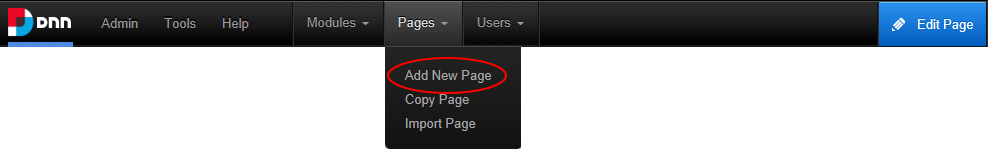

Adding a New Page
How to add a new page to a site. This topic shows how to add a page with only the basic settings configured. Page Name is the only required field. If you accept all default settings the new page will be added to the menu to the right of the page you were located on at Step 1. Pages added using this tutorial are only visible to Administrators, allowing you to add content to the page before setting it as viewable by one or more user roles.
Note: If a maximum number of pages has been set for your site, the Add Page button is disabled when the maximum number of pages is reached. If this happens you will need to contact your Host to allow you to add more pages. SuperUsers can modify the maximum number of pages set for an individual site, See "Editing Host Settings for a Site"
- Hover over the Pages option in the ControlBar then select Add New Page.

- In the Page Name text box, enter a page name as it will appear in the menu. This is the only required field. If you choose to update the new page now this will accept all the defaults and add a page in a neutral language.
- Recommended. Complete the remaining optional page details for this page. See "Page Details Settings for New Pages"
- Optional. Select the Permissions tab and set the users who can view and manage this page. The default permissions is visible and editable by Administrators only. Note: If permissions are not displayed, this means you are not authorized to manage permissions. In this scenario, the new page will inherit permissions from its parent page. See "Setting Page Permissions"
- Optional. Select the Advanced Settings tab and complete any of the optional advanced page settings. See "Advanced Settings for New Pages"
- Recommended. In the Localization section, select the required option. This section is only displayed when content location is enabled on the site. See "Localization Settings for New Pages"
- Click the Add Page button.
-
See "Adding a Page to a Multi-Language Site"